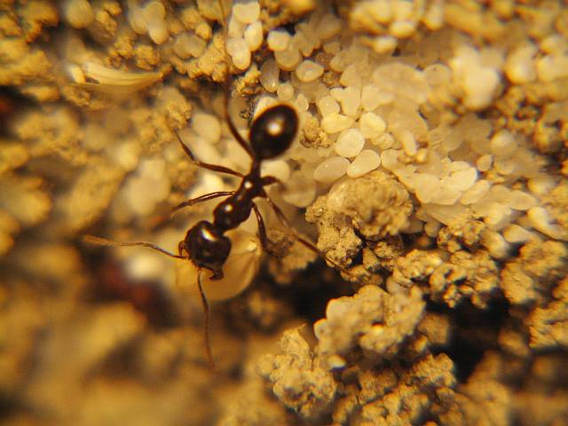
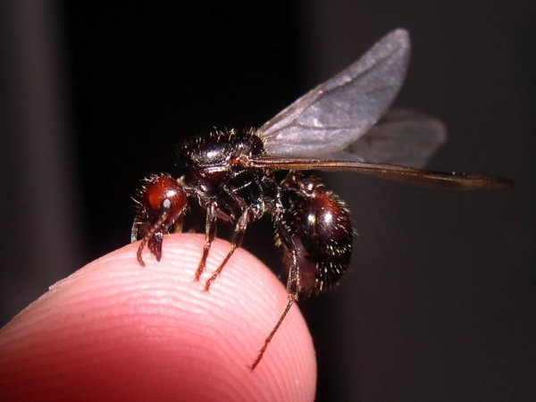
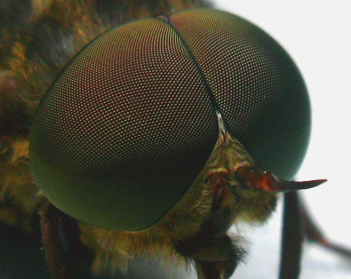
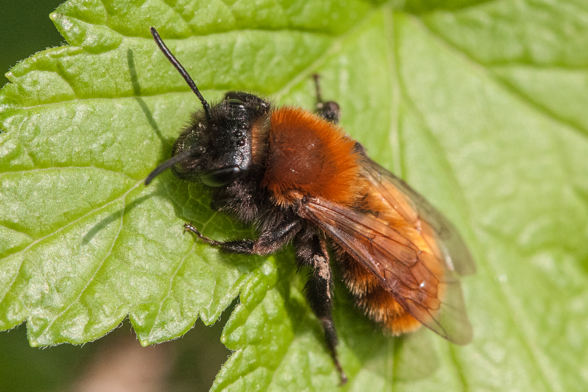

Insekten
Insekten sind die erfolgreichste Tierklasse auf unserem Planeten. Sie umfassen mehr als 1 Millionen bekannte Arten und viele weitere, die noch nicht entdeckt wurden. Dieser enorme Artenreichtum basiert an der hohen Anpassungsfähigkeit der Insekten, die es ihnen ermöglicht hat, nahezu jeden Lebensraum zu bevölkern. Findne kann man sie daher auf dem Boden und in der Luft, aber auch in Süß- und Salzwasser.
Koloniale Insekten
Einige Insekten leben zusammen in sozialen Kolonie, wie die Honigbienen, aber auch Termiten und Ameisen. Sie erkennen einander anhand von Duftstoffen, die ihnen helfen zwischen Freund und Feind zu unterscheiden. In einer Kolonie übernehmen Ameisen verschiedene Aufgaben, die großen Einfluss auf ihr Erscheinungsbild haben können.
Bild einer Ameisenarbeiterin (Messor barbarus) von Mario Dejung, lizenziert unter CC BY-SA 3.0.
{kind=link}
Bild einer Ameisenkönigin (Messor barbarus) von Álvaro Rodríguez, lizenziert unter CC BY-SA 2.0.
{kind=link}
Körperbau Insekten
Das wichtigste Erkennungsmerkmal von Insekten sind ihre 6 Beine. Diese entwickeln sich teilweise jedoch erst nach ihrer Larvenform. Sie besitzen ein Exoskelett, das sie schützt und ihrem Körper Struktur gibt. Auch das Komplexauge ist typisch für Insekten und erlaubt es Ihnen sogar den Ultravioletten Bereich des Lichts wahrzunehmen.
Bild eines Facettenauges (Komplexauges) einer Pferdebremse von Michael Hanselmann, lizenziert unter CC BY-SA 3.0.
{kind=link}
Wo sind die Insekten im Winter?
Viele Insekten legen im Herbst ihre Eier im Boden oder in Teichen. Dort die Eier geschützt vor Kälte überwintern. Im Frühjahr, wenn es wärmer wird, schlüpfen dann die neuen Larven. Es gibt aber auch einige Insekten, die es schaffen den Winter zu überleben. Soziale Insekten wie Bienen und Ameisen überwintern zusammen in ihren Nestern. Viele Insekte fallen in eine sogenannte Winterstarre. Dabei können sie sogar gefrieren ohne Schaden zu nehmen, indem sie ihr eigenes Frostschutzmittel herstellen.
Rolle der Insekten im Ökosystem
Neben ihrer Rolle als Jäger und Beute spielen Insekten eine wichtige Rolle als Bestäuber. Dabei übertragen sie den Pollen einer Pflanze zu einer anderen, wodurch diese Befruchtet wird. Um Insekten anzulocken, nutzen die meisten Pflanzen leckeren Nektar. Da der Mensch den Insekten immer weiter ihren Lebensraum nimmt, ist zu befürchten, dass es in Zukunft nicht mehr ausreichend natürliche Bestäuber geben könnte. Als Folge dessen müssten teure alternative Bestäuber geschaffen werden.
Insekten Fun Facts
Stärskte Insekten:Der Dungkäfer ist eines der stärksten Insekten und kann das 1.141-fache seines eigenen Körpergewichts ziehen. Das ist vergleichbar damit, dass ein Mensch etwa 80 Tonnen ziehen könnte.
Leuchtkäfer:Glühwürmchen erzeugen Licht durch eine chemische Reaktion in ihrem Körper, die Biolumineszenz genannt wird. Sie nutzen dieses Licht, um Partner anzulocken und Räuber abzuschrecken.
Aquatischer Lebensraum:Einige Insekten sind in der Lage unter Wasser zu atmen. Das tun sie entweder durch Kiemen oder aber auch durch einen hauchdünnen Luftfilm, ein sogenanntes Plastron.
Wildbienen
In Deutschland gibt es etwa 600 nachgewiesene Arten von Wildbienen. Die kleinsten Arten sind gerade mal 3 mm groß, während die größeren bis zu 3 cm groß werden können. Anders als ihr Verwandter die Honigbiene leben die meisten Wildbienen einzeln. Wildbienen nisten im Boden, im Holz oder in Pflanzenstängeln. In der Natur gehören sie zu den wichtigsten Pflanzenbestäubern und sind daher extrem wichtig für die biologische Artenvielfalt. Leider sind jedoch ca. 1/3 der Wildbienenarten stark gefährdet, da ihre Lebensräume vom Menschen zerstört werden und sie unter dem Einsatz von Pestiziden leiden.
Bild einer Rotpelzige Sandbiene (Andrena fulva) von Pauln, lizenziert unter CC BY-SA 3.0.
{kind=link}
Wie kann ich helfen?
Die beste Unterstützung für Wildbienen ist ein naturnaher Garten, der ohne chemische Mittel bearbeitet wird. Auch das Anpflanzen von heimischen Blütenpflanzen und das Darbieten von Sandflächen als Nistplatz hilft den Wildbienen enorm. Auch der Bau einer artgerechten Nisthilfe kann den Fortbestand von Wildbienen unterstützen.
Bau eines Wildbienenhauses
Was ein gutes Wildbienenhaus enthalten sollte:
Holzklötze aus Hartholz (Buche, Esche u.ä.) mit Löchern von 2-9 mm Durchmesser.Kleine Löcher bis 6 mm werden dringender gebraucht als große. Die Löcher sollten so tief wie möglich gebohrt werden, müssen aber hinten geschlossen sein, an beiden Enden offene werden nicht besiedelt. Unregelmäßig angeordnete Löcher helfen der Biene bei der Orientierung. Immer sollte „von der Seite“ quer zur Faser ins Holz gebohrt werden. Vor allem müssen die Bohrlöcher sehr sauber gearbeitet werden!
Schilf-, Bambus- oder Strohhalme mit sauberen Schnittkanten.Sie lassen sich gut in Blechdosen füllen und mit Spachtelmasse befestigen. Dabei ist darauf zu achten, dass die in jedem Halm vorhandenen Knoten (Verschlüsse) hinten in der Dose sind, damit möglichst lange Röhren zur Besiedlung frei sind.
Spezielle Bienensteine aus Tonsind bei Fachfirmen erhältlich und werden sehr gut angenommen. Sie halten viele Jahre, werden immer wieder neu besiedelt und sind ihr Geld wert!
Pappröhrchen in verschiedenen Größen sind ebenfalls bei Fachfirmen erhältlich. Sie halten länger als man denkt und lohnen sich ebenfalls.
Was auf keinen Fall sein darf und leider in den meisten käuflichen Nisthilfen enthalten ist:
Kein faserndes, quellendes Nadelholz / Weichholz verwenden
Es dürfen keine Bohrungen ins Stirnholz (d.i. die Schnittkante des Holzes) gesetzt werden. Aufgebohrte Baumscheiben bekommen Trocknungsrisse, und die Bienengänge verpilzen.
Ausgefranste Bohrlöcher mit hervorstehenden Splittern zerstören die Flügel der Bienen und sind tödlich!
Holzstücke ohne Löcher, verschlossene Schilfstängel u.ä. können nicht besiedelt werden.
Kiefernzapfen, Stroh und Steine sind für Bienen völlig nutzlos. Sie sind lediglich billigstes Füllmaterial und erhöhen die Gewinne der Hersteller.
Lochmauersteine werden ebenfalls nie bezogen - die Löcher sind viel zu groß!